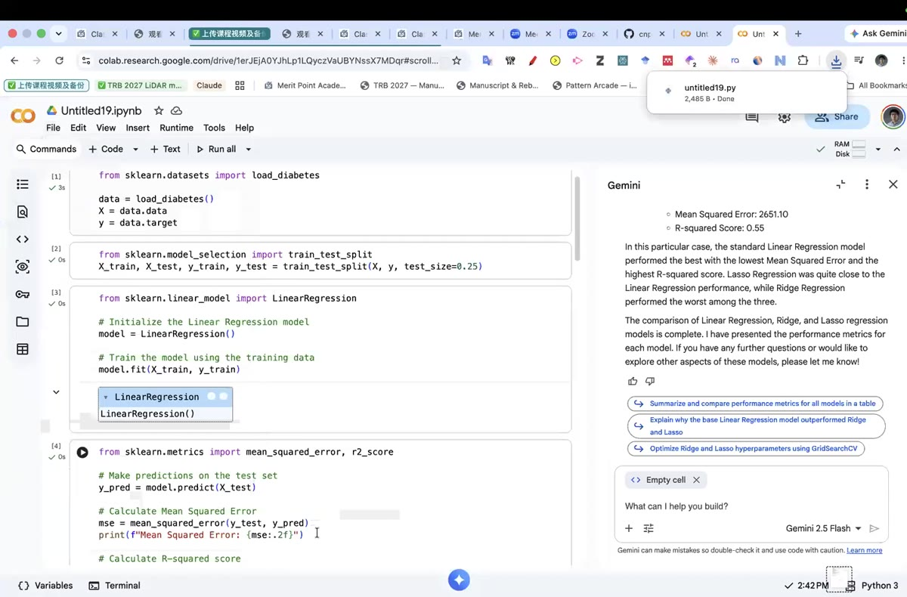
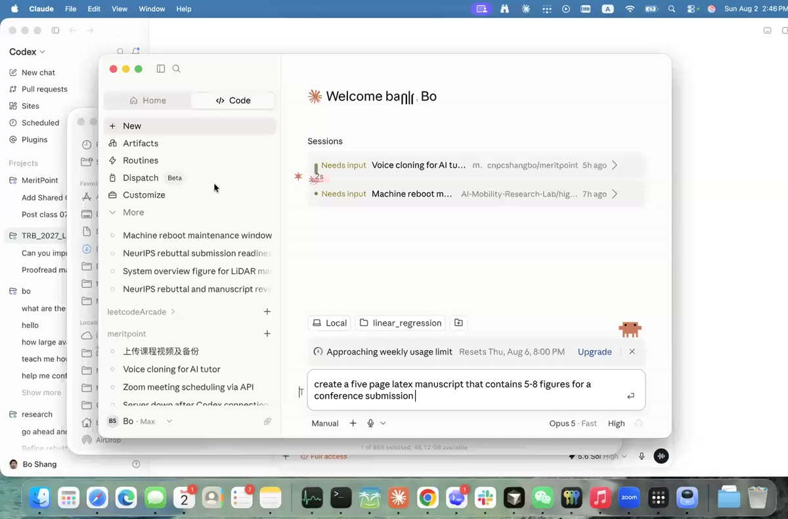
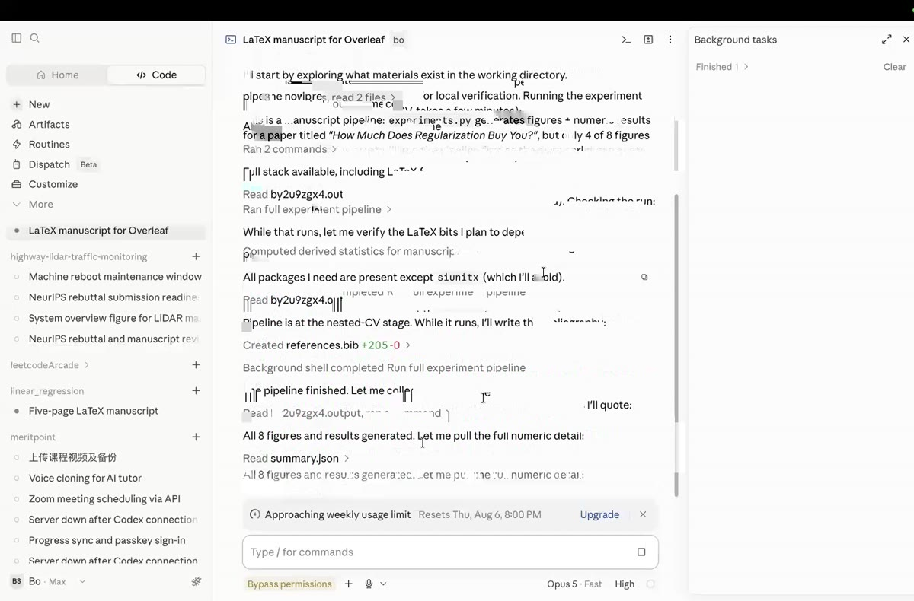
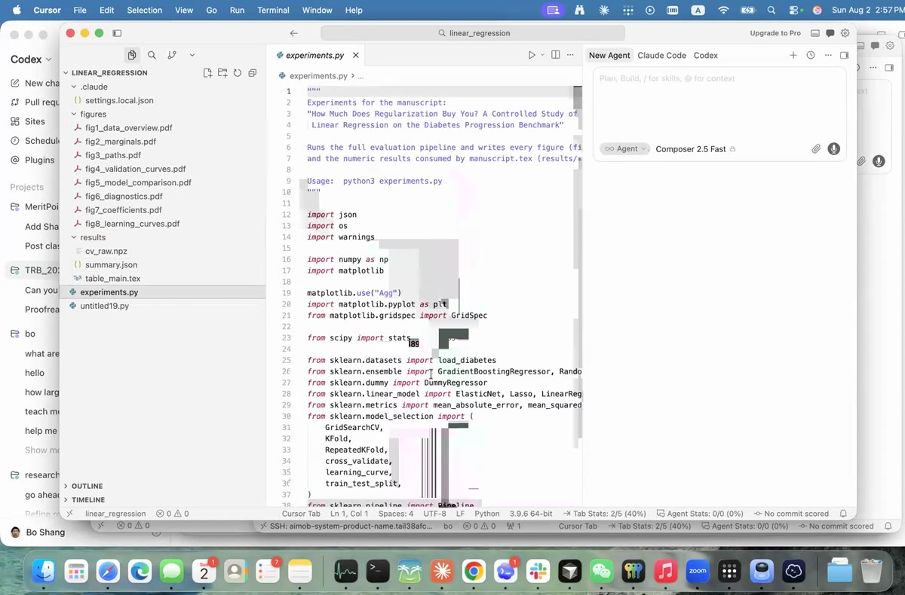
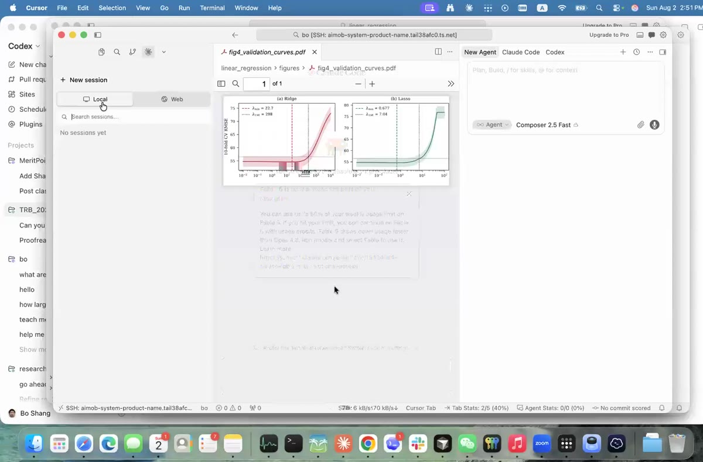

What this guide is: the written version of the live demo at the end of Class 10 · Linear Regression. We took the five-line regression from Google Colab, downloaded it as a .py file, opened it in Claude Code, and asked for a five-page LaTeX manuscript with 5–8 figures. Twenty minutes later we had eight figures, a results table, a bibliography, and a zip ready for Overleaf.
The one idea to keep: Claude Code did not invent the results. It wrote an experiment script, ran it, read the numbers back out of summary.json, and then wrote the paper around those real numbers. That is the difference between a paper and a fabrication.
A manuscript is not a writing problem — it is a bookkeeping problem. Every number in the text has to trace back to code that someone can run again. The AI is very good at the bookkeeping and the LaTeX; you stay responsible for the science.
.py1Start from an analysis that already runs
You cannot write a paper about code that does not work. In class the starting point was the notebook from Class 10 — scikit-learn's built-in diabetes dataset, a train/test split, and three models compared:
from sklearn.datasets import load_diabetes from sklearn.model_selection import train_test_split from sklearn.linear_model import LinearRegression, Ridge, Lasso from sklearn.metrics import mean_squared_error, r2_score data = load_diabetes() X, y = data.data, data.target X_train, X_test, y_train, y_test = train_test_split(X, y, test_size=0.25) model = LinearRegression().fit(X_train, y_train) # the baseline ridge = Ridge(alpha=1.0).fit(X_train, y_train) # L2 regularization lasso = Lasso(alpha=0.1).fit(X_train, y_train) # L1 regularization y_pred = model.predict(X_test) print(mean_squared_error(y_test, y_pred), r2_score(y_test, y_pred)) 2651.10 0.55
Then a scatter plot of predicted against actual values — matplotlib for the quick look, seaborn when you want it to look publishable — so the fit is something you can see, not just a number you report.
random_state before you write anything down. train_test_split(X, y, test_size=0.25) reshuffles on every run, so the same code gave R² ≈ 0.55 in one cell and ≈ 0.57 a few minutes later. That wobble is harmless in a notebook and fatal in a paper — you cannot reproduce a number you did not pin. Write train_test_split(X, y, test_size=0.25, random_state=42) and the score stops moving.2Get the script out of Colab
Claude Code works on files in a folder on your computer, not on a browser tab. So the notebook has to come down first.
In Colab: File → Download → Download .py
You get a plain Python file — in the demo it was untitled19.py, all of 2,485 bytes. That tiny file is the entire seed of the paper.

untitled19.py download in the corner.untitled19.py tells a reader nothing. diabetes_regression.py takes four seconds and saves your future self a headache. Then make a folder for the project and put the file inside it:
mkdir ~/linear_regression mv ~/Downloads/untitled19.py ~/linear_regression/(New to
mkdir and mv? Guide 01 covers the terminal from zero.)Why download .py instead of .ipynb?
Both work, and Claude Code can read a notebook too. But .py is the cleanest hand-off: no stored outputs to confuse things, and it runs with a single python3 file.py.
3Open the folder in Claude Code
Claude Code is Anthropic's coding agent. It runs in a terminal, in the Claude desktop app, or inside VS Code / Cursor. Unlike a chat window, it can see your folder, edit files, and run commands — which is exactly what a manuscript needs.
# terminal version — one line, from inside your project folder
cd ~/linear_regression
claude
In the desktop app you press New, then pick the folder (in the demo: linear_regression) next to the prompt box. The first time you use it, a browser tab opens to sign in and comes back saying “You're all set up for Claude Code.”

linear_regression above the prompt — that is the scope of everything the agent is allowed to see.4The prompt — short, but with the right four facts
The prompt used in class was one sentence:
It is short, but it pins down four things the model would otherwise have to guess:
| Fact given | Why it matters |
|---|---|
| Length — five pages | Controls how much text is written and how dense the figures need to be. |
| Format — LaTeX | Determines the whole toolchain: .tex, .bib, PDF figures, pdflatex. |
| Figure count — 5–8 | Forces real experiments. Eight figures cannot be filled with one train/test split. |
| Venue — conference submission | Sets the structure: abstract, related work, method, experiments, results, conclusion, references. |
diabetes_regression.py. Write a five-page LaTeX manuscript for a conference submission with 5–8 figures comparing Linear, Ridge and Lasso regression on this dataset. Write a single experiments.py that generates every figure and every number, run it, and use only its real output in the paper — do not invent any value.Which of these belongs in the prompt?
Style adjectives change nothing you care about. Constraints about where numbers and citations come from change everything — that is where AI writing goes wrong.
5Watch what it does — this part is the lesson
Do not scroll past the agent's progress log. The reason, in the instructor's own words while the demo ran:
That is the whole job of watching. In class the log read, in order, roughly like this:

summary.json.| What it said | What that actually means |
|---|---|
| “I start by exploring what materials exist in the working directory.” | It listed your folder and read your .py file. It is building the paper from your analysis, not a generic template. |
| “Full stack available, including LaTeX.” | It checked that Python and pdflatex are installed before promising a PDF. If LaTeX is missing it will tell you instead of failing at the end. |
“All packages I need are present except siunitx (which I'll avoid).” | It adapted the document to the packages you actually have. This is why the PDF compiles on your machine. |
| “Ran full experiment pipeline” (background) | It executed the experiments — nested cross-validation, learning curves — and waited for real output. |
“While it runs, I'll write the bibliography.” → Created references.bib +205 | It parallelised: long computation in the background, prose in the foreground. |
“All 8 figures and results generated. Let me pull the full numeric detail” → Read summary.json | The critical step. Numbers enter the manuscript by being read out of a results file, not by being remembered. |
Three things that will slow you down
| What happens | What to do |
|---|---|
| Your laptop has no LaTeX. The agent checks early and says so. In class this is exactly why a second agent was started on a remote server that already had the toolchain — “the local one may not have the LaTeX; this one is still doing more experiments.” | Either install a TeX distribution, or let the agent produce .tex + figures and compile in Overleaf (§7) — Overleaf has LaTeX so you do not need to. |
| It pauses for permission. Agents ask before running commands or writing files, and the run sits idle until you answer. | Stay at the keyboard for the first few minutes. An agent waiting on a dialog looks exactly like an agent that is thinking. |
| Eight figures takes real time. Nested cross-validation and learning curves are genuine computation — “probably because we asked a challenging task… then it takes some time.” | Let it run. In class the figure count climbed to eight while the class discussed something else. Do not restart it because it looks stuck. |
6What comes back
The 2 KB script turned into a project. Every figure in the paper has a file, and every file has code that made it:

experiments.py is the real deliverable. Its docstring names the paper it feeds and ends with Usage: python3 experiments.py — one command regenerates every figure and number in the manuscript.The generated experiments.py reaches well past the original five lines — GridSearchCV, RepeatedKFold, cross_validate, learning_curve, a Pipeline, plus ElasticNet and a DummyRegressor baseline. That is what eight honest figures costs, and it is a good reading list for what you should learn next.

experiments.py in your folder, that is the bug. Ask for it explicitly:
experiments.py that regenerates all figures and results/summary.json from scratch. Run it and show me the output.Which file makes the paper reproducible?
The .tex is only the presentation layer. Reproducibility lives in the script that turns data into results, plus the results file it writes.
7Get it into Overleaf
Most conferences and most classmates work in Overleaf. Ask for the package directly — this was the second prompt of the demo:
Then in Overleaf: New Project → Upload Project → drop the zip → Recompile. The zip needs manuscript.tex, references.bib, and the whole figures/ folder; leave the raw data out unless it is small.
8Before you put your name on it
You are the author. The agent is a very fast assistant with no accountability. Five checks, every time:
results/summary.json, then find those same values in the PDF. Numbers in the text that appear nowhere in the results file are the single most common failure — delete them or regenerate them.references.bib and look up each entry on Google Scholar. Language models produce plausible references that were never written. A fake citation ends a submission.The manuscript reports “R² = 0.61” but your summary.json says 0.55. What do you do?
A mismatch between text and results file is the exact error this whole workflow exists to prevent. The results file wins — always.
9Prompt library
Reusable prompts for the rest of the pipeline. Change the file names to yours.
| Goal | Prompt |
|---|---|
| First draft | “Read my_analysis.py. Write a five-page LaTeX conference manuscript with 5–8 figures. Put every experiment in one experiments.py, run it, and use only its real output.” |
| More evidence | “Add a learning curve and a residual diagnostic figure. Regenerate summary.json and update every number in the text that changed.” |
| Honesty pass | “List every numeric claim in manuscript.tex next to the exact key in results/summary.json it comes from. Flag anything with no source.” |
| Citation audit | “For each entry in references.bib, tell me the title, authors, year and venue, and mark any you are not certain is a real publication.” |
| Reviewer rehearsal | “Act as a strict reviewer for this venue. Give me the three weaknesses most likely to get this rejected, and what experiment would fix each.” |
| Overleaf package | “Prepare a zip with manuscript.tex, references.bib and figures/ that compiles on Overleaf with no missing files.” |
| Shrink to fit | “The paper is 5.4 pages; the limit is 5. Cut 0.4 pages without deleting any figure or weakening any claim.” |
Your next step: take your own Class 10 regression, run it through steps 1–7, and bring the compiled PDF plus your experiments.py to office hours. For the modelling itself, revisit Class 10 · Linear Regression. For choosing the dataset, see Guide 05. For the terminal commands used here, see Guide 01. To put the finished paper on the web, see Guide 04.